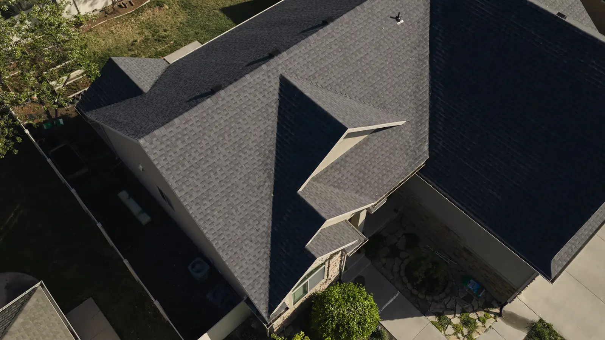

Choosing a new roof involves more than selecting a color or style. Different roof types offer distinct advantages in appearance, durability, maintenance, and long-term value. At Aesthetic Roofing, we help Northern Utah homeowners understand their options so they can choose a roofing system that fits both their home and their priorities.
Our team works with homeowners throughout Davis County, Weber County, and Utah County, as well as surrounding Northern Utah communities. Whether you’re interested in traditional shingles, a premium designer product, metal roofing, or a low-slope system, we’ll help you compare the different types of roofing materials and make an informed decision.
Asphalt Shingle Designer Asphalt Roofing Flat Roofing Metal RoofingCompare Our Residential Roofing Options
There’s no single roofing material that’s right for every property. Your home’s architecture, roof design, aesthetic preferences, and budget can all influence which material makes the most sense.
Asphalt Shingle Roofing
Asphalt shingle roofing is a popular residential roofing option because it provides a versatile combination of performance, appearance, and value. Homeowners can choose from numerous colors and profiles, making it relatively easy to find shingles that complement their home’s exterior.
Asphalt shingles can be an excellent choice if you want a traditional roofing system with plenty of design flexibility. When properly installed as part of a complete roofing system, they provide dependable protection against Northern Utah’s changing weather.
Designer Asphalt Roofing
For homeowners who want to make the roof a more prominent part of their home’s exterior design, designer asphalt roofing provides an upgraded alternative to traditional shingles.
Designer shingles use distinctive profiles, dimensional appearances, and premium finishes to create greater visual interest. They can provide the character of more traditional luxury roofing materials while retaining the practical benefits of an asphalt roofing system.
Standing Seam Metal Roofing
Metal roofing offers a distinctive appearance combined with impressive durability. Its raised vertical seams create clean architectural lines that work especially well with contemporary homes, although metal can complement many other architectural styles.
Metal roofing is often appealing to homeowners who prioritize longevity and relatively low maintenance. Its durability can also make it well-suited to Northern Utah’s snow, wind, and changing seasonal conditions.
Flat Roofing
Homes with low-slope sections require a roofing system specifically designed to manage water effectively. Our flat roofing systems provide an appropriate solution for areas where traditional steep-slope roofing materials may not be suitable.
Proper installation is particularly important with flat and low-slope roofs because drainage and waterproofing play a significant role in long-term performance. Our team can evaluate the roof design and recommend an appropriate system for the property.
How to Choose the Best Roof Type for Your Home
If you’re wondering, “What’s the best roof type for my home?” the answer depends on what matters most to you. Rather than selecting a material based on appearance alone, consider how it fits your home’s needs and your long-term plans.
Important factors include:
- Budget: Consider both the initial investment and the value you expect from the roofing system over time.
- Appearance: Your roof makes up a substantial portion of your home’s exterior, so its color, profile, and style can influence curb appeal.
- Durability: Consider the demands Northern Utah’s climate may place on the material.
- Maintenance: Some roofing materials may require different levels of attention throughout their service lives.
- Roof design: Pitch, drainage, and architectural details can affect which materials are appropriate for your home.
- Long-term plans: How long you expect to remain in the home may influence how you weigh upfront cost against longevity.
Aesthetic Roofing can walk you through these considerations and explain the advantages of each option without pushing you toward a material that doesn’t fit your priorities.
What to Consider When Comparing Roofing Materials
A useful roofing materials guide should look beyond the visible surface. Shingles or metal panels are only one part of the system protecting your home.
When comparing residential roofing options, it’s important to consider how the material will work alongside underlayment, flashing, ice and water protection, and ventilation. These components work together to manage moisture, protect vulnerable areas, and support the roof’s long-term performance.
Ventilation deserves particular attention. Aesthetic Roofing evaluates both exhaust and intake ventilation to help create an appropriately balanced system rather than focusing solely on how warm air exits the attic.
Quality Installation Matters for Every Roof Type
Even premium roofing materials can’t perform as intended if they’re installed incorrectly. That’s why choosing your material and choosing your roofing contractor should be part of the same decision.
Aesthetic Roofing is a GAF Master Elite® contractor, a designation earned by a small percentage of roofing contractors nationwide. Our crews follow manufacturer specifications and established installation standards, treating the roof as a complete system.
Homeowners deserve clarity throughout the process. We’ll explain your material options, answer your questions, and help you understand what you’re investing in before work begins.
Get your next project started Our process Our team applies system-specific solutions that align with manufacturer standards and industry best practices. Our team applies system-specific solutions that align with manufacturer standards and industry best practices.
Explore Roofing Materials for Your Northern Utah Home
Whether you prefer the versatility of asphalt shingles, the elevated appearance of designer shingles, the durability of metal, or need a flat roofing solution, Aesthetic Roofing can help you find the right fit.
We proudly help homeowners throughout Davis County, Weber County, Utah County, and surrounding Northern Utah communities compare roof types and select a system suited to their home. Contact Aesthetic Roofing to discuss your residential roofing options and take the next step toward a new roof.